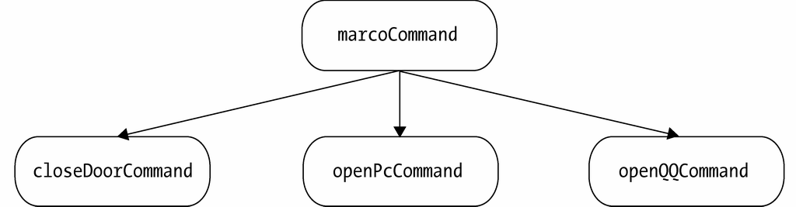

我们在第9章命令模式中讲解过宏命令的结构和作用。宏命令对象包含了一组具体的子命令对象，不管是宏命令对象，还是子命令对象，都有一个execute方法负责执行命令。现在回顾一下这段安装在万能遥控器上的宏命令代码：
var closeDoorCommand = {
execute: function(){
console.log( '关门' );
}
};
var openPcCommand = {
execute: function(){
console.log( '开电脑' );
}
};
var openQQCommand = {
execute: function(){
console.log( '登录QQ' );
}
};
var MacroCommand = function(){
return {
commandsList: [],
add: function( command ){
this.commandsList.push( command );
},
execute: function(){
for ( var i = 0, command; command = this.commandsList[ i++ ]; ){
command.execute();
}
}
}
};
var macroCommand = MacroCommand();
macroCommand.add( closeDoorCommand );
macroCommand.add( openPcCommand );
macroCommand.add( openQQCommand );
macroCommand.execute();
通过观察这段代码，我们很容易发现，宏命令中包含了一组子命令，它们组成了一个树形结构，这里是一棵结构非常简单的树，如图10-1所示。

图 10-1
其中，marcoCommand被称为组合对象，closeDoorCommand、openPcCommand、openQQCommand都是叶对象。 在macroCommand的execute方法里，并不执行真正的操作，而是遍历它所包含的叶对象，把真正的execute请求委托给这些叶对象。
macroCommand表现得像一个命令，但它实际上只是一组真正命令的“代理”。并非真正的代理，虽然结构上相似，但macroCommand只负责传递请求给叶对象，它的目的不在于控制对叶对象的访问。